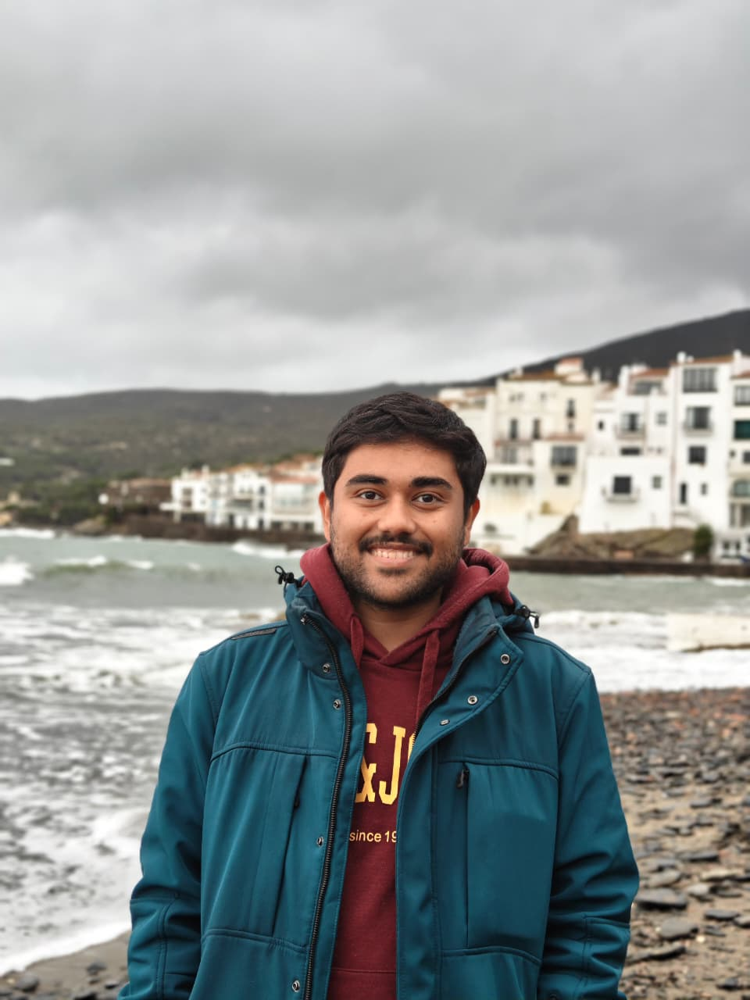

Aishik Mandal
ELLIS PhD Candidate · UKP Lab, TU Darmstadt
I am an ELLIS PhD student at UKP Lab, TU Darmstadt, supervised by Prof. Iryna Gurevych and co-supervised by Prof. Aurélien Bellet and Prof. Tanmoy Chakraborty. My research focuses on privacy-preserving synthetic therapy session generation and clinical mental health AI.
I hold a dual Master's in AI/ML and Bachelor's in Electronics & ECE from IIT Kharagpur (Silver Medal, Dept. Rank 1). Previously I interned at INRIA Montpellier (2025–26), INRIA Paris (2022), and the Theoretical Foundations of AI group at TU Munich (2021).
